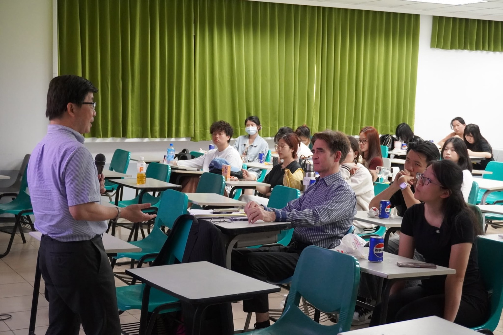

Night of Glory: a celebration of the IBSC community
Celebrating student achievement and cross-cultural service through “We Are The World: Unity in Diversity.”
Read the storyStories from the IBSC community, from cultural discovery to the moments that bring students together.

Celebrating student achievement and cross-cultural service through “We Are The World: Unity in Diversity.”
Read the story
A visit to Songshan Cultural and Creative Park connects students with Taiwan’s creative landscape.
Read the storyThe International Pizza Party creates space to meet, exchange ideas, and make connections.
Read the story